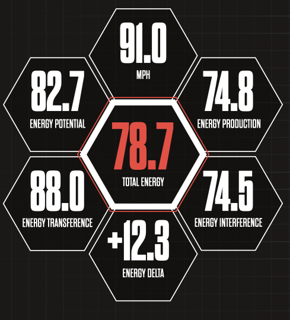
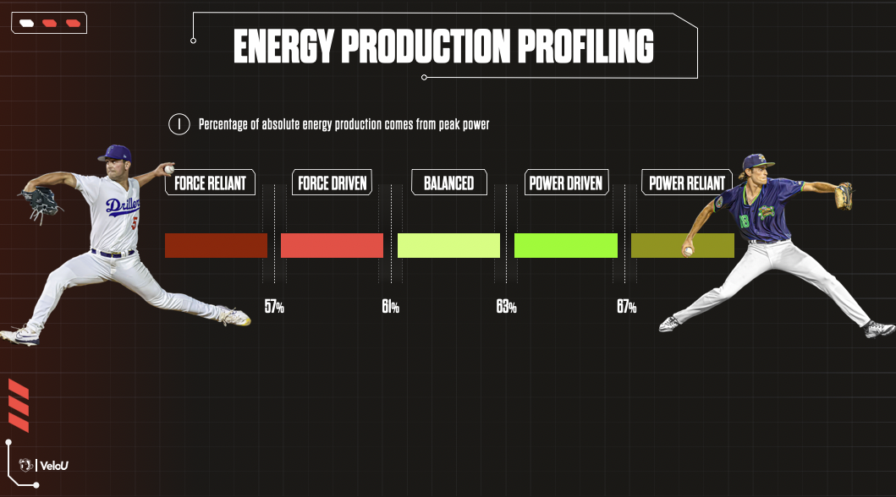

Potential
Height · Weight · H:W- Tells you
- His physical starting point.
- Misread
- Weight gain is not velo unless force and power rise with it.
What every number on an athlete's energy report means. Module 6 teaches what you do about them.
The body creates energy, moves it up the chain, and delivers it to the ball. A weak link anywhere caps velocity. The model finds the weakest link.
This is a real report. Every athlete gets one after evaluation and every retest.

1 2 3 4 5 6 7What he actually throws.
What his body size supports.
His engine, from the force plates. Sets Strength Level.
How well energy moves ground to ball.
Whether the arm can accept that energy.
The four combined: the velocity his body should produce.
MPH minus Total Energy. The number you check first.
He throws 12.3 mph more than his body supports. Look for the lowest scores: Production (74.8) and Interference (74.5). A small engine and a weak brake, with the arm making up the difference.
Energy he isn't using. Transference, mechanics, or skill.
To throw harder, he needs more energy.
Throwing above his energy. Watch it.
Velo the body can't account for. Injury-risk conversation.
The kid throwing well above his energy is the one everyone gets excited about. Here, he is the one we protect first.
How he produces energy: through force or through speed.

Reliant athletes can't repeat their output. No pro lives in a reliant category. The goal is 57% to 67%.
| Metric | Plain meaning | Used for |
|---|---|---|
| Peak vertical force | Most force he pushes into the ground | Profiling |
| Peak power | How fast he produces that force | Profiling |
| Peak power / BM | Power relative to his size | Applied Power |
| Eccentric impulse | How well he brakes on the way down | CI:EI ratio |
| Concentric impulse | Force he produces on the way up | CI:EI ratio |
| CI:EI ratio | Concentric ÷ eccentric impulse | Level 3 routing (Module 6) |
Phase, split, and duration only change at re-diagnosis. TBC Energy component retest every 2 weeks.
60 seconds. Make it yours, keep the structure. "Velocity is energy. Your son's body creates it, moves it up through his hips and trunk, and delivers it to the ball. We test every step, and our model predicts how hard he should throw with a lot of accuracy. When his velocity doesn't match what his body produces, we know exactly which part to work on. That's why his program looks different from his teammate's, and why we retest instead of guessing."
Twelve questions, including calculations. Answer in your own words.